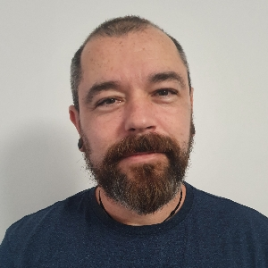

Pál Dániel

Summary
Understanding tasks/problems fast, openness to new knowledge, good aesthetic sense, open to project and team work, initiative role in problem solving, intention for clean code, strong motivation for growth in profession, good communication in professional questions, open and happy to learn new web development technologies, fast learner.
Education
-
2021 - Webler (Szeged, Hungary)
- IT Professional Foundation
- Java Programming Basics
- Java SE Programming
- Java EE Programming
- Java Network and Database Management
-
2022 - Prooktatás (Budapest, Hungary)
-
2023 Udemy
- The Complete Python Pro Bootcamp (Dr. Angela Yu)
Work Experience
-
2023 - Zuglói szociális szolgáltató központ
- food delivery to the socially needy
-
2022 - 2023 Wolt
-
2018 -2022 Volánbusz Zrt.
- Precise exterior washing of buses, trucks and cars by hand and machine
-
2014 -2018 Dakk Zrt.
- Complete cleaning of the interior of buses
-
2011 -2014 Tisza Volán Zrt.
- Complete cleaning of the interior of buses
-
2008 -2011 Job search and casual jobs
- Complete cleaning of the interior of buses
-
2008 -2008 Rampf Formen Kft.
- operation of a cnc milling machine with a heidenhian controller, production of workpieces prepared on time
-
2005 -2008 Casual Jobs
- electrician, carpenter, mason, painter
-
1999 -2005 Szegedi Fonalfeldolgozó
- Sorting, binding and high-quality copying of documents to be photocopied, document arrangements
-
1998 -1999 Szegedi Ruhagyár
- Accurate and high-quality preparation of various sewing operations
-
1998 - 1998 Szegedi Hangszergyár
- Milling and polishing of the external and internal parts of musical instruments
Skills
- Java
- Python
- MySQL
- CSS
- SASS
- PHP
- Linux
- Git
Awards and Certifications
Other
Between 2006 and 2015, I did the complete preparation of the website of the Impro Művészeti és Oktatási Egyesület and Zoltán Megyeri, and I helped in the preparation of the website of the Brigantyk Airsoft Team using html, css, php and mysql (unfortunately, I can no longer present these works, as the domains are now no longer exist).
Contant Me